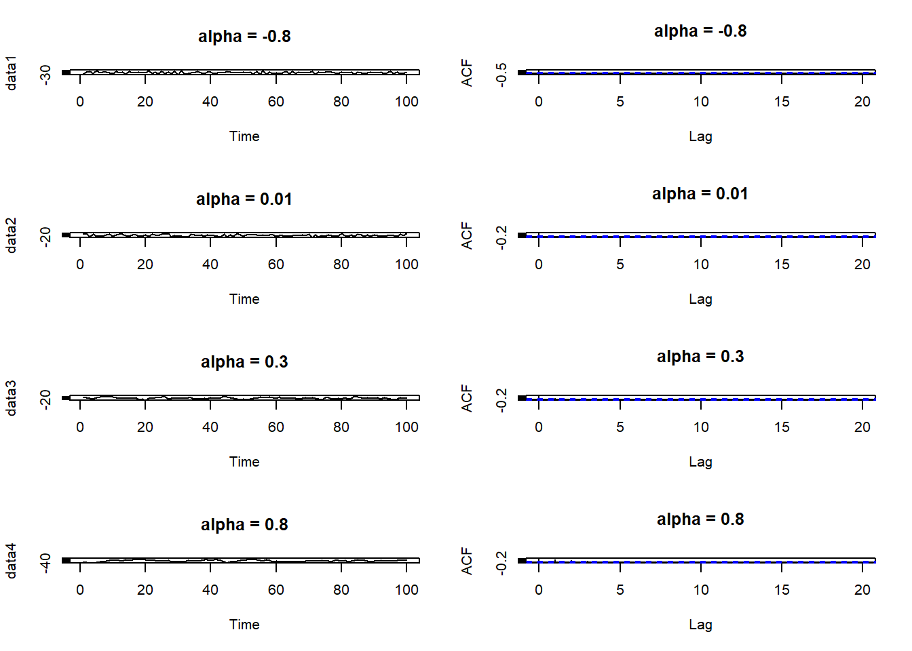
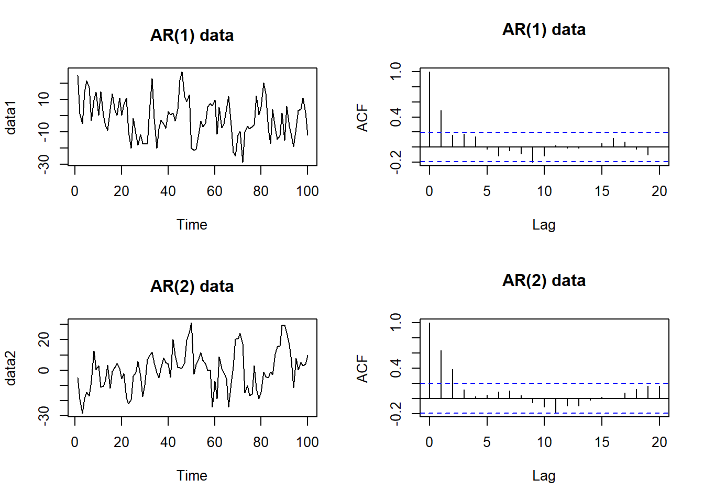
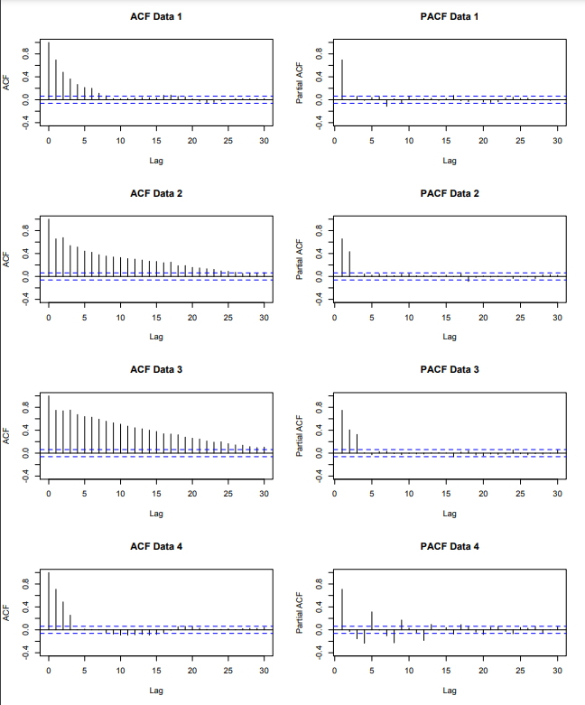

5 Chapter 3: Autoregressive processes
\(Z_t\) is purely random with mean zero and variance \(\sigma_z^2\)
5.1 Definition
An Autoregressive process of order \(p\), denoted \(AR(p)\), is given by \[X_{t}=\alpha_{1}X_{t-1}+\ldots+\alpha_{p}X_{t-p}+Z_{t}\] Where we assume \(X_{0}=X_{-1}=\ldots=X_{1-p}=0\)
Essentially regress \(X_t\) to its own past values
5.2 First order Autoregressive process
An \(AR(1)\) process is given by \[X_{t}=\alpha X_{t-1}+Z_{t}\]
5.2.1 Mean
\[E(AR(1))=0\]
5.2.2 Variance
If \(|\alpha|\geq1\) then \(Var[X_t]=\infty\) If \(|\alpha|\lt1\) then \(\alpha^2\lt1\), and:
\[\sum_{j=0}^{\infty}\alpha^{2j}=1+\alpha^{2}+\alpha^{4}+\alpha^{6}+\ldots~=~\frac{1}{1-\alpha^{2}}\]
So we have:
\[\mathrm{Var}[X_{t}]=\sigma_{z}^{2}\sum_{j=0}^{\infty}\alpha^{2j}=\frac{\sigma_{z}^{2}}{1-\alpha^{2}} \]
5.2.3 Examples

5.3 \(AR(p)\) process
is given by \[X_{t}=\alpha_{1}X_{t-1}+\ldots+\alpha_{p}X_{t-p}+Z_{t} \]
\(Z_t\) can be written as:
\[\begin{eqnarray} X_{t}&=&\alpha_{1}X_{t-1}+\ldots+\alpha_{p}X_{t-p}+Z_{t}\nonumber\\ X_{t}-\alpha_{1}X_{t-1}-\ldots-\alpha_{p}X_{t-p}&=&Z_{t}\nonumber\\ (1-\alpha_{1}B-\alpha_{2}B^{2}-\ldots-\alpha_{p}B^{p})X_{t}&=&Z_{t}\nonumber\\ \phi(B)X_{t}&=&Z_{t}\nonumber \end{eqnarray} \]
where \(B\) is the backshift operator
5.3.1 Mean
\[E[AP(p)] = 0\]
5.3.2 Stationarity
We calculate the variance and autocorrelation function conditional on the process being stationary. The following theorem tells us when an AR(p) process is stationary.
Theorem
AR(p) written as \(\phi(B)X_{t}=Z_{t}\) where \(\phi(B)\) is the characteristic polynomial \(\phi(B)=1-\alpha_{1}B-\alpha_{2}B^{2}-\ldots-\alpha_{p}B^{p}\)
Then the process is stationary if the roots of the characteristic equation \[\phi(B)=1-\alpha_{1}B-\alpha_{2}B^{2}-\ldots-\alpha_{p}B^{p}=0\] have modulus greater than 1, i.e. they lie outside the unit circle. Here we consider \(B\) as the variable of the polynominal equation
5.3.3 Variance
\[\mathrm{Var}[X_{t}]=\sigma^{2}_{z}+\sum_{\tau=1}^{p}\alpha_{\tau}\gamma_{\tau} \]
5.3.4 Autocorrelation Function
Using Yule-Walker equation:
\[\rho_{\tau}=\alpha_{1}\rho_{\tau-1}+\ldots+\alpha_{p}\rho_{\tau-p}\] Examples for \(\tau = 1\) and \(\tau = 2\):
\[\rho_{1}=\frac{\alpha_{1}}{1-\alpha_{2}}.\]
\[\rho_{2}=\alpha_{1}\rho_{1}+\alpha_{2}\rho_{0}=\frac{\alpha_{1}^{2}}{1-\alpha_{2}}+\alpha_{2}\] Note: as \(\tau\) increases the function gets more complex algebraically. Same thing with p increases in AR(p)
5.4 When and how to use AR(p) model
Realisations from the following AR(1) and AR(2) models:
\[X_t=0.6X_{t-1}+Z_t\] \[X_t=0.75X_{t-1}-0.125X_{t-2}+Z_t\]
# Simulate AR(1) and AR(2) data
n <- 100
sd <- 10
data1 <- arima.sim(model = list(ar = 0.6), n = n, sd = sd)
data2 <- arima.sim(model = list(ar = c(0.75, -0.125)), n = n, sd = sd)
# Plot the correlogram and time plot
par(mfrow = c(2, 2))
plot(data1, main = "AR(1) data")
acf(data1, main = "AR(1) data")
plot(data2, main = "AR(2) data")
acf(data2, main = "AR(2) data") The ACF are the same. It will be better to look at the correlogram of the residuals to see if the residuals resemble a purely random process. If there is still residual correlation, increase \(p\) by one and re-fit the model and repeat. However, this is not a good method if AR(p) isn’t a suitable model at the first place.
5.4.1 Definition of PACF
The partial autocorrelation function (PACF) at lag \(τ\) is equal to the estimated lag \(τ\) coefficient \(\hat \alpha_{\tau}\), obtained when fitting an AR(\(τ\)) model to a data set. It is denoted by \(π_τ\), and represents the excess correlation in the time series that has not been accounted for by the \(τ-1\) smaller lags.
The partial autocorrelation function allows us to determine an appropriate AR(p) process for a given data set. This is because if the data do come from an AR(p) process then:
\[\pi_{\tau} = \left\{\begin{array}{cc}\mbox{positive}&\tau\leq p\\0&\tau>p\end{array}\right.\]
This is because by definition, PACF is only measuring the direct correlation of the data with lag \(\tau\). The AR(p) model does not factor in lag bigger than p, making the coefficient of those would be 0.
Therefore, to choose the order of an AR(p) process, plot the PACF and choose p as the smallest value that is significantly different from zero.
5.4.1.1 Example
Looking at PACF, Data 1 uses AR(1) process, Data 2 uses AR(2), Data 3 uses AR(3), Data 4 uses AR(12)
